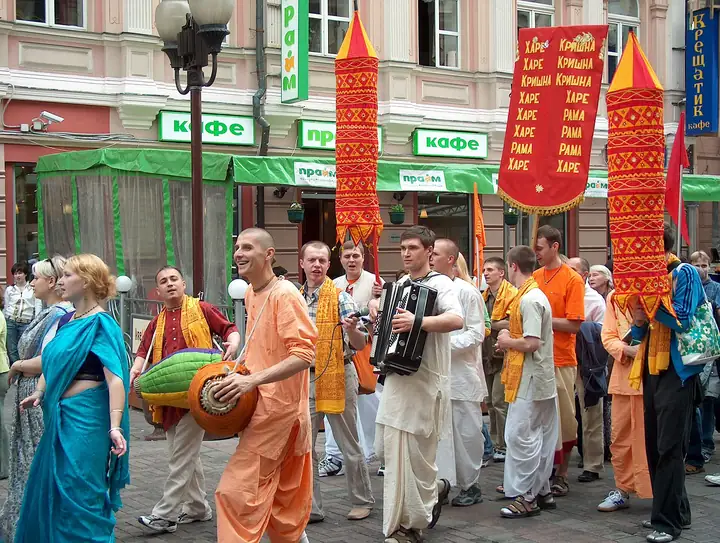
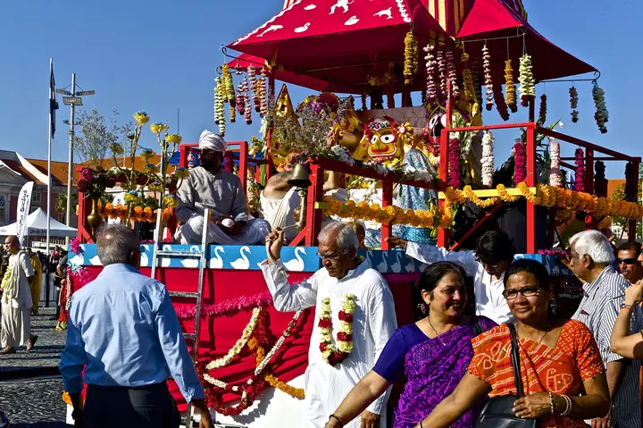
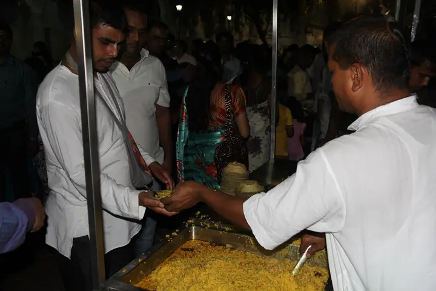

Древна духовна традиция · жив път днес
Общество за Кришна съзнание
Вероизповедание от традицията на Гаудия ваишнавизма: пътят на бхакти, любящата преданост към Бога, познат в Бхагавад-гита и Шримад Бхагаватам.
Обществото за Кришна съзнание е българското вероизповедание на Международното общество за Кришна съзнание (ИСКОН), духовно движение, основано през 1966 г. в Ню Йорк от Бхактиведанта Свами Прабхупада. То принадлежи към ваишнавизма, един от главните клонове на индийската духовна традиция, който почита единия Бог като върховна личност.
В България изповеданието присъства от 1991 г. и е регистрирано вероизповедание, самостоятелно юридическо лице с дейност в цялата страна. Нашата мисия е да съхраняваме и споделяме това древно знание: чрез богослужение, образование, благотворителност и издаване на класическата ведическа литература.
1Кои сме
Основна статия: Какво е Кришна съзнание
1.1Основателят
Основна статия: Шрила Прабхупада
Негова Божествена Милост А. Ч. Бхактиведанта Свами Прабхупада (1896–1977), основателят на ИСКОН и преводач на класическата ведическа литература.
Роден в Калкута през 1896 г., Абхай Чаран Де се среща през 1922 г. със своя бъдещ духовен учител, Бхактисиддханта Сарасвати Тхакура, който го моли да разпространи знанието за Кришна на английски език. В продължение на десетилетия той подготвя това дело, докато през 1965 г., вече на близо седемдесет години, отплава за Америка с товарен кораб, почти без средства, но с твърдата решимост да изпълни наставлението на своя учител.
Делото му
- Основател на ИСКОН (1966)
- Преводач на Бхагавад-гита каквато е
- Над 30 тома Шримад Бхагаватам и Чайтаня-чаритамрита
- Основател на Бхактиведанта бук тръст (1972)
- Книгите му са преведени на над 80 езика
1.2Международното общество
Основна статия: Международното общество за Кришна съзнание
ИСКОН (известно и като „движението Харе Кришна“) е духовна общност, която съхранява и споделя ученията на ваишнавизма по целия свят.
Международното общество за Кришна съзнание (на английски International Society for Krishna Consciousness, ИСКОН) е основано през 1966 г. в Ню Йорк от Негова Божествена Милост А. Ч. Бхактиведанта Свами Прабхупада. На седемдесетгодишна възраст, изпратен от духовния си учител, той пристига сам в Съединените щати с няколко сандъка книги, за да представи на Запад древната наука за бхакти йога. За броени години около него възниква общност, която днес обхваща стотици центрове, храмове, селскостопански общности, училища и вегетариански ресторанти на всички континенти.
ИСКОН не е нова религия, а съвременен клон на традиция, на повече от пет века в сегашния си облик и с корени, водещи към най-древните духовни текстове на Индия. Обществото следва ученията на Шри Чайтаня Махапрабху (1486–1534), светец и реформатор, който утвърждава съвместното възпяване на Божиите имена като духовен път за всеки, независимо от произход и положение.
1.3Цели на Обществото
Основна статия: Цели на Обществото
Целите на Обществото за Кришна съзнание са определени в неговия устав и насочват цялата му религиозна, образователна и благотворителна дейност.
- Систематично да популяризира духовно знание и да образова хората в принципите на духовния живот (бхакти йога).
- Да проповядва знанието за вечната връзка на всяко живо същество с Бога (Кришна съзнание) посредством предано служене (бхакти), както е изложено в Бхагавад-гита и Шримад Бхагаватам.
- Да подпомага и насърчава движението за съвместно възпяване на светите имена на Бога (санкиртан), както е разкрито в ученията на Шри Чайтаня Махапрабху.
- Да организира издаването и разпространението на философска и религиозна литература, помагала и информационни издания, свързани с вярата и практиката на ваишнавизма.
- Да съхранява и популяризира ведическата култура и да поощрява воденето на прост и природосъобразен начин на живот.
Тези цели следват седемте основополагащи цели, поставени от Шрила Прабхупада при основаването на Международното общество за Кришна съзнание (ИСКОН) през 1966 г.
Дейности на Обществото
В изпълнение на целите си Обществото издава и разпространява духовна литература; организира съвместно възпяване на светите имена: Харинам (улично шествие), Ратха ятра (шествие с колесници) и Пада ятра, както и концерти, изложби и публични програми с лекции и бхаджани; провежда ведическо обожание (арчана) на изображения на Бога (Мурти) в молитвени домове; приготвя и раздава Кришна прасадам; създава местни поделения в страната, ведически ашрами и училища (гурукула); извършва ведически обреди (самскари) и действа в тясно сътрудничество с Международното общество за Кришна съзнание.
2Традиция
Основна статия: Традиция и ученическа приемственост
Принадлежим към Гаудия ваишнавизма и към жива верига от духовни учители (парампара), която предава знанието непроменено от учител на ученик.
2.2Шри Чайтаня Махапрабху
Гаудия ваишнавизмът е вдъхновен от Шри Чайтаня Махапрабху (1486–1534), почитан в традицията като самия Бог, слязъл, за да научи света на пътя на любящата преданост. Той утвърждава санкиртана (съвместното възпяване на светите имена на Бога) като най-достъпния и действен духовен метод за нашата епоха, открит за всеки човек без оглед на произход.
2.3Парампара: веригата на учителите
Знанието в нашата традиция не е плод на лични мнения, а се предава непрекъснато през ученическа приемственост (парампара). Всеки учител получава ученията от своя духовен учител и ги предава нататък без изопачаване. Тази верига води началото си от самия Кришна и преминава през велики учители до наши дни.
- Шри Кришна → Брахма → Нарада → ВясаИзначалният източник на знанието и древните мъдреци, които го записват и предават.
- Шри Чайтаня Махапрабху (1486–1534)Възражда пътя на бхакти и движението на санкиртана в Бенгал.
- Бхактивинода Тхакура (1838–1914)Изтъкнат богослов, който представя бхакти пред съвременния, образован свят.
- Бхактисиддханта Сарасвати Тхакура (1874–1937)Основава мисия за разпространение на учението и обучава поколение проповедници.
- Бхактиведанта Свами Прабхупада (1896–1977)По указание на своя учител пренася Кришна съзнание на Запад и основава ИСКОН.
3Учение
Основна статия: Философията накратко
Ученията на Кришна съзнание отговарят на най-дълбоките въпроси на човека: Кой съм аз? Какъв е смисълът на живота? Какво е Бог?
В сърцевината на нашето учение стои разграничението между материята и духа. Тялото е материално и преходно, но в него обитава вечна духовна същност: душата. Когато душата забрави връзката си с Бога, тя се отъждествява с тялото и търси щастие в материалния свят, преминавайки през повтарящи се раждания и смърти според закона на кармата. Духовният живот започва с пробуждането от това забравяне.
- Кришна: Бог като личностАбсолютната Истина като върховна личност, изпълнена с любов и красота.
- Душата, кармата и преражданетоКои сме всъщност и как действат законите, които управляват живота ни.
- Бхакти йога и маха-мантратаПътят на любящата преданост и възпяването на светите имена.
- Свещените текстовеБхагавад-гита, Шримад Бхагаватам и ведическата мъдрост.
- Начин на животВегетарианство, прасадам и четирите принципа на чистия живот.
- Практика и празнициБогослужение, киртан и празничният календар на общността.
4Практика и празници
Основна статия: Практика и празници
Богослужението, музиката и празниците са сърцето на живота на общността, открити за всеки гост.
4.1Маха-мантрата
Основна статия: Бхакти йога и маха-мантрата
Бхакти йога е пътят на любящата преданост: най-достъпният духовен метод, открит за всеки.
Главната практика на бхакти йога е възпяването и повтарянето на светите имена на Бога. В традицията на Шри Чайтаня тази практика (наречена санкиртана, когато се извършва съвместно) е обявена за духовния метод, особено препоръчан за днешното време. Светите имена могат да се възпяват свободно, навсякъде, от всекиго.
Харе Кришна, Харе Кришна,Кришна Кришна, Харе ХареХаре Рама, Харе Рама,Рама Рама, Харе Харе
Тази мантра се нарича маха-мантра („великата мантра за освобождение“). В нея се обръщаме към Бога (Кришна и Рама) и към Неговата вътрешна духовна енергия (Харе) с молба за любящо служене. Възпяването ѝ пречиства съзнанието, успокоява ума и пробужда заспалата любов към Бога. Практикуващите я повтарят както съвместно с музика (киртан), така и тихо, броейки на молитвена броеница (джапа).
4.2Богослужение и киртан
В центровете на изповеданието ежедневно се провеждат служби, които включват възпяване на светите имена (киртан), молитви, четене и обсъждане на свещените текстове и предлагане на храна на Бога. Киртанът, съвместно пеене с традиционни инструменти, е особено характерен и създава радостна, обединяваща атмосфера. Гостите са добре дошли да наблюдават или да участват.

4.3Неделни програми
Много центрове провеждат седмична открита програма с киртан, лекция върху Бхагавад-гита или Шримад Бхагаватам и споделено вегетарианско угощение (прасадам). Това е най-достъпният начин човек да се запознае отблизо с традицията.
4.4Празничен календар
- ДжанмащамиПразникът на появата на Кришна: един от най-големите в годината.
- Гаура ПурнимаПоявата на Шри Чайтаня Махапрабху.
- Ратха ятраПразникът с колесница: шествие из града, открито за всички.

4.5„Храна за живота“
Грижата за ближния е неотделима част от практиката. Чрез програмата „Храна за живота“ (Food for Life) общността раздава безплатно осветена вегетарианска храна на нуждаещи се, една от най-широко разпространените благотворителни инициативи от този вид в света, провеждана и в България.

5В България
Основна статия: Кришна съзнание в България
От тихото начало в годините преди демократичните промени до признат и устойчив религиозен живот днес.
5.1История
- 80-теПърви последователи и неофициално разпространение на ученията.
- 1991Официална регистрация като вероизповедание.
- от 90-теЦентрове, издаване на книги и ежегоден фестивал Ратха ятра.
Ученията на Кришна съзнание достигат до България още през 80-те години на ХХ век, когато първите интересуващи се се запознават с тях по неофициални пътища: чрез разпространявани на ръка преводи и книги. В условията на тогавашните ограничения върху религиозния живот общуването е скромно и неформално, но интересът към духовната традиция постепенно нараства.
След демократичните промени от 1989 г. общността излиза на открито. През 1991 г. Обществото за Кришна съзнание получава официално признание като вероизповедание, стъпка, която поставя началото на организирания религиозен, богослужебен и благотворителен живот на изповеданието у нас. С приемането на новия Закон за вероизповеданията Обществото е вписано в регистъра на вероизповеданията с решение на Софийския градски съд (ф.д. № 1663/2003 г.) и днес действа като самостоятелно юридическо лице с национален обхват.
През следващите десетилетия се развиват центрове в София и в други градове, организират се редовни богослужения, открити програми и лекции, превеждат се и се издават книгите на Шрила Прабхупада на български език. От средата на 90-те години в София ежегодно се провежда празникът Ратха ятра: пъстро шествие с колесница из централните части на града, превърнало се в разпознаваема част от културния календар на столицата. Развива се и благотворителната дейност, включително програмата за безплатно вегетарианско хранене „Храна за живота“.
5.2Центрове и общности
Основна статия: Центрове и общности в България
Обществото за Кришна съзнание развива дейност в цялата страна: чрез храмове, центрове и местни общности (намахатти). Всички те са открити за гости.
Като национално вероизповедание поддържаме центрове и общности в редица градове. Освен редовните богослужения и програми, в страната се провеждат и публични прояви: фестивалът Ратха ятра, лекции, концерти с духовна музика и благотворителната програма „Храна за живота“.
| Град | Данни |
|---|---|
| София | Адрес: гр. София, кв. „Малинова долина“, бул. „Климент Охридски“ 119 Телефон: 02 961 60 50 Имейл: info@krishnabg.com |
| Пловдив | Местна общност и програми. Данни за контакт: в процес на допълване. |
| Варна | Местна общност и програми. Данни за контакт: в процес на допълване. |
| Бургас | Местна общност и програми. Данни за контакт: в процес на допълване. |
| Стара Загора | Местна общност и програми. Данни за контакт: в процес на допълване. |
| Русе | Местна общност и програми. Данни за контакт: в процес на допълване. |
За връзка с вероизповеданието на национално ниво вижте страница Контакти.
6Литература
Основна статия: Свещената литература и Бхактиведанта бук тръст
Книгите са основата на изповеданието: изворът, от който всеки може да почерпи знание от първоизточника.
„Книгите ще бъдат основата.“
Шрила Прабхупада
Бхактиведанта бук тръст (БиБиТи) е учреден от Шрила Прабхупада през 1972 г. и е най-големият издател на класическа ваишнавска и ведическа литература в света. Той издава и съхранява преводите и коментарите на Прабхупада, както и трудове, които разясняват философията, богословието и културата на бхакти йога. Книгите на тръста са преведени на над 80 езика и се разпространяват по целия свят.
За нашето изповедание тези издания имат богослужебно значение: те са текстовете, които се четат на службите, изучават се в общността и се поднасят на всеки търсещ. Затова официалната ни книжарница предлага именно изданията на Бхактиведанта бук тръст.
Основни заглавия
- Бхагавад-гита каквато еНай-известният духовен текст на Индия с превод и коментар на Прабхупада.
- Шримад Бхагаватам„Зрелият плод на ведическото знание“, в многотомно издание.
- Шри Чайтаня-чаритамритаЖитието и ученията на Шри Чайтаня Махапрабху.
- Нектарът на преданосттаНаука за същината на бхакти, пътя на чистата преданост.
Бележки и източници
- Какво е Кришна съзнаниекъм раздел 1
- Шрила Прабхупадакъм раздел 1.1
- Международното общество за Кришна съзнаниекъм раздел 1.2
- Цели на Обществотокъм раздел 1.3
- Традиция и ученическа приемственосткъм раздел 2
- Философията накраткокъм раздел 3
- Практика и празницикъм раздел 4
- Кришна съзнание в Българиякъм раздел 5
- Центрове и общности в Българиякъм раздел 5.2
- Свещената литература и Бхактиведанта бук тръсткъм раздел 6
- Контакти и правен статуткъм Контакти
Правни данни
| Наименование | „Общество за Кришна съзнание“ (ОКС) |
|---|---|
| Статут | Регистрирано вероизповедание: самостоятелно юридическо лице (чл. 14–15 от Закона за вероизповеданията) |
| Съдебна регистрация | Софийски градски съд, ф.д. № 1663/2003 г. (парт. № 7, том 1, стр. 60) |
| ЕИК / БУЛСТАТ | [да се впише] |
| Управление | Общо събрание · Национален съвет · Председател на Националния съвет |
| Обхват | цялата територия на Република България |
Контакти
Обществото за Кришна съзнание (ОКС) е регистрирано вероизповедание, самостоятелно юридическо лице по Закона за вероизповеданията, с дейност в цялата страна. Присъства в България от 1991 г.
| Седалище и адрес | гр. София, кв. „Малинова долина“, бул. „Климент Охридски“ 119 |
|---|---|
| Телефон | 02 961 60 50 |
| Имейл | info@krishnabg.com |
| Уебсайт | krishnabg.com |